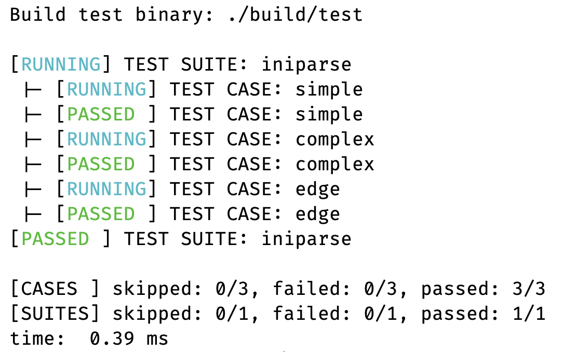

utest¶
Overview¶
utest is a macro-based unit testing framework with built-in multi-threading support. The single include needed is utest.h, all other headers are pulled in transitively.
Tests are organized in a two-level hierarchy: suites contain cases. A suite is a function that registers and runs cases; cases are functions that execute assertions. The framework collects results across all suites and prints a final summary.
Suites can be run sequentially or in parallel across a thread pool, where each thread pulls the next unstarted suite from a shared queue.

Flags¶
Flags control output verbosity and failure behavior. Pass them to UTEST_INIT or toggle them at runtime with UTEST_ADDFLAG / UTEST_CLRFLAG.
| Flag | Effect |
|---|---|
UTF_SHOWSUITE |
Print suite begin/end markers |
UTF_SHOWCASE |
Print case begin/end markers |
UTF_STOPONSUITE |
Stop dispatching new suites after the first suite failure |
UTF_STOPONCASE |
Skip remaining cases in a suite after the first case failure |
UTF_DEFAULT |
Default flag set applied when 0 is passed to UTEST_INIT |
Macros¶
Lifecycle¶
UTEST_INIT(flags)¶
Initializes the framework. Must be called before any other macro. Pass 0 to use UTF_DEFAULT.
UTEST_FINI()¶
Finalizes the framework, prints the summary, and releases all resources. Must be called after all suites have run.
UTEST_ADDFLAG(flag)¶
Adds a flag to the active flag set.
UTEST_CLRFLAG(flag)¶
Clears a flag from the active flag set.
Defining suites and cases¶
UTEST_SUITE(name)¶
Defines a suite function. The body registers and runs cases via UTEST_RUNCASE.
UTEST_CASE(name)¶
Defines a case function. The body contains assertions.
Registration and execution¶
UTEST_ADDSUITE(name)¶
Registers a suite with the framework. Must be called after UTEST_INIT and before any run macro.
UTEST_RUNCASE(name)¶
Runs a case inside a suite body. Must be called from within a UTEST_SUITE block.
UTEST_RUNSUITE(name)¶
Runs a single registered suite by name. Returns 0 on success, -1 if the suite is not found.
UTEST_RUNSUITES()¶
Runs all registered suites sequentially.
UTEST_RUNSUITES_THREAD(nthreads)¶
Runs all registered suites in parallel using a thread pool of nthreads threads. Each thread pulls the next unstarted suite from a shared work queue, so suites are distributed dynamically. Suite-level output is buffered per suite and flushed atomically to avoid interleaving.
UTEST_SHOWSUITES()¶
Prints the names of all registered suites to stdout.
Assertions¶
All assertion macros follow the naming convention EXPECT_<OP>_<TYPE>(actual, expect). A failing assertion marks the current case as failed and logs the failure, but does not abort the case.
Boolean
EXPECT_TRUE(expr),EXPECT_FALSE(expr)
Pointer
EXPECT_NULL(ptr),EXPECT_NOTNULL(ptr)EXPECT_EQ_PTR,EXPECT_NE_PTR,EXPECT_GT_PTR,EXPECT_GE_PTR,EXPECT_LT_PTR,EXPECT_LE_PTR
Integer
EXPECT_EQ_INT,EXPECT_NE_INT,EXPECT_GT_INT,EXPECT_GE_INT,EXPECT_LT_INT,EXPECT_LE_INT
Unsigned integer
EXPECT_EQ_UINT,EXPECT_NE_UINT,EXPECT_GT_UINT,EXPECT_GE_UINT,EXPECT_LT_UINT,EXPECT_LE_UINT
Character
EXPECT_EQ_CHAR,EXPECT_NE_CHAR,EXPECT_GT_CHAR,EXPECT_GE_CHAR,EXPECT_LT_CHAR,EXPECT_LE_CHAR
Unsigned character
EXPECT_EQ_UCHAR,EXPECT_NE_UCHAR,EXPECT_GT_UCHAR,EXPECT_GE_UCHAR,EXPECT_LT_UCHAR,EXPECT_LE_UCHAR
Double
EXPECT_EQ_DOUBLE,EXPECT_NE_DOUBLE,EXPECT_GT_DOUBLE,EXPECT_GE_DOUBLE,EXPECT_LT_DOUBLE,EXPECT_LE_DOUBLE
String
EXPECT_EQ_STR,EXPECT_NE_STR,EXPECT_GT_STR,EXPECT_GE_STR,EXPECT_LT_STR,EXPECT_LE_STR
Example¶
#include <utest.h>
/* test cases */
UTEST_CASE(test_add) {
EXPECT_EQ_INT(1 + 1, 2);
EXPECT_NE_INT(1 + 1, 3);
}
UTEST_CASE(test_str) {
EXPECT_EQ_STR("hello", "hello");
EXPECT_NULL(NULL);
}
/* suite groups related cases */
UTEST_SUITE(math_suite) {
UTEST_RUNCASE(test_add);
}
UTEST_SUITE(str_suite) {
UTEST_RUNCASE(test_str);
}
int main(void)
{
UTEST_INIT(0); /* use default flags */
UTEST_ADDSUITE(math_suite);
UTEST_ADDSUITE(str_suite);
/* run all suites across 4 threads */
UTEST_RUNSUITES_THREAD(4);
UTEST_FINI();
return 0;
}